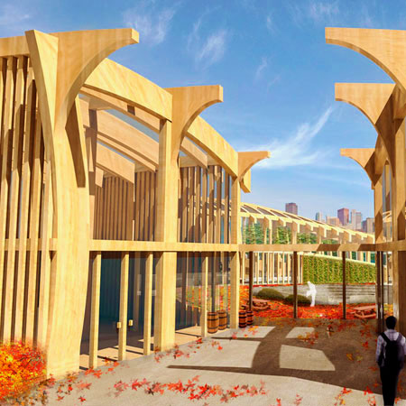
The Urban Agriculture Center is a five-week conceptual design final synthesis project for the Grow Collective Studio. Situated on the north side of Pittsburgh, the building is programmed as a headquarters for Grow Pittsburgh, including both administrative as well as educational and community growing spaces. The project begins to develop prototype typologies for urban agriculture.
Independent. Fall 2016.
[-] Physical Overview
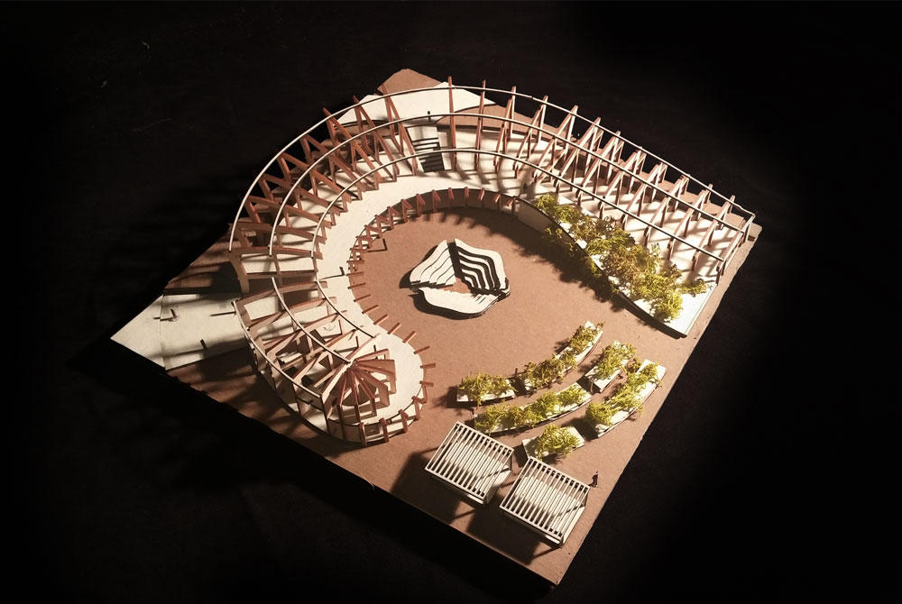
[-] South Side
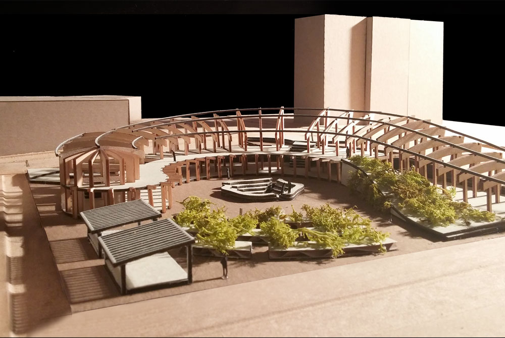
The project experiments with using parametric tools to aid in the creation and adaptation of a hypothetical mass timber construction system. Wood was considered as a material for its sustainable potential and soft relationship to the growing environment. Façade properties and spacing were parametrically varied according to the seasonal cycles to creates a pattern of lighting and circulation throughout the project.
[-] Entrance View
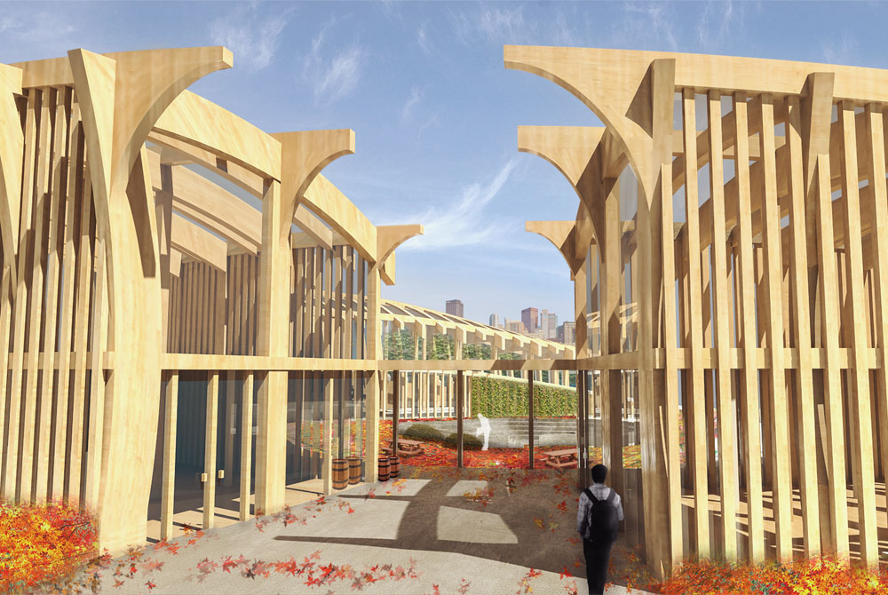
[-] Courtyard View
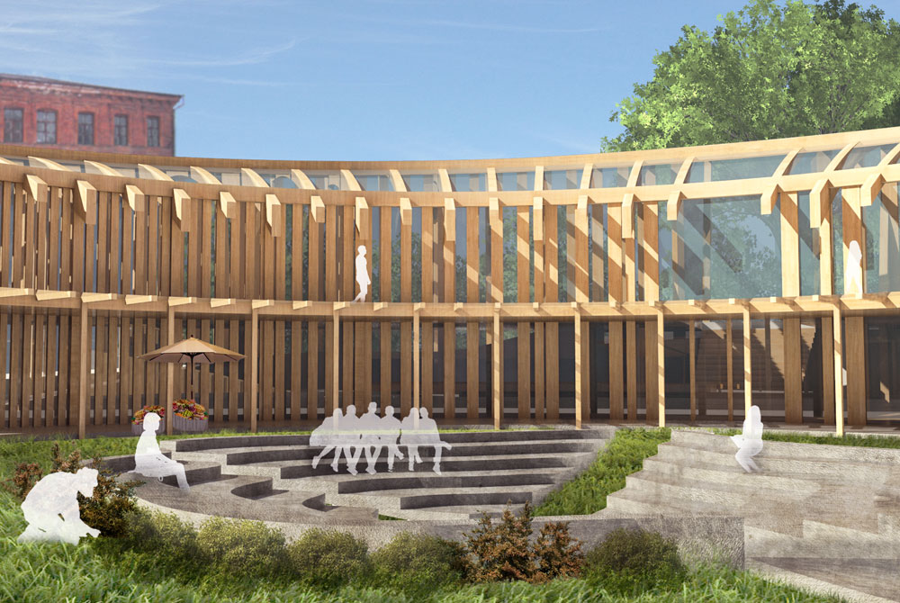
Each corner of the site bears a different experiential character, which can be thought of in relation to seasonal cycles: the deeply-shaded, high-traffic, heavily built north-west corner of the site reflects a perception of winter, mirrored by a very sunny, primarily green unbuilt area suited to pedestrian traffic on the south-east corner of the site, which serves as the respective summer. These seasonal inflections were used to program the site, placing administrative and storage areas that are used throughout the year within the winter zone, while seasonal and climate-based activities such as community garden were located in the spring and summer zones.
[-] Site Plan
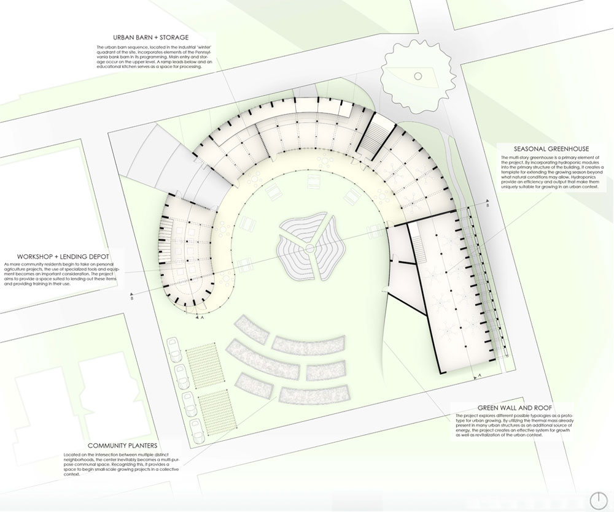
[-] Unrolled Section
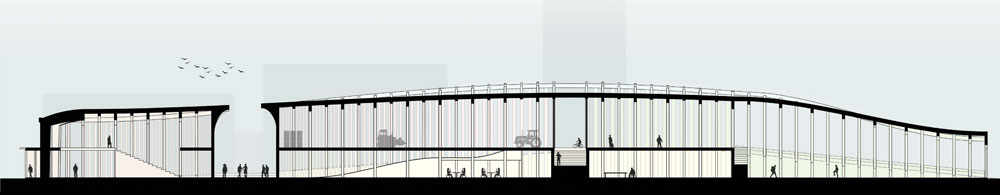
[-] Transverse Section
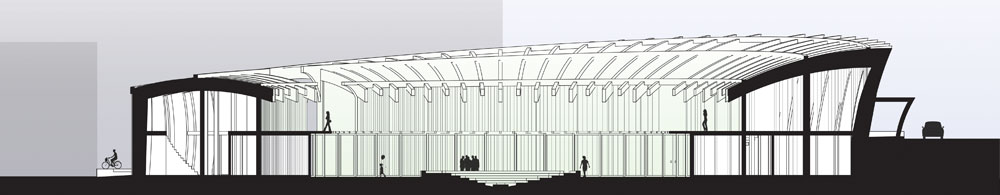
The site is located at the intersection of several distinct neighborhoods in Pittsburgh, with different focuses on residential, commerical, and historical activity. The project's form attempts to bring these distinct communities together and create a positive outdoor sheltered space for interaction and growth within the urban context. Various arcs are created through the relationship of elements within the design to foster different types and scales of interaction.
[-] Green Roof
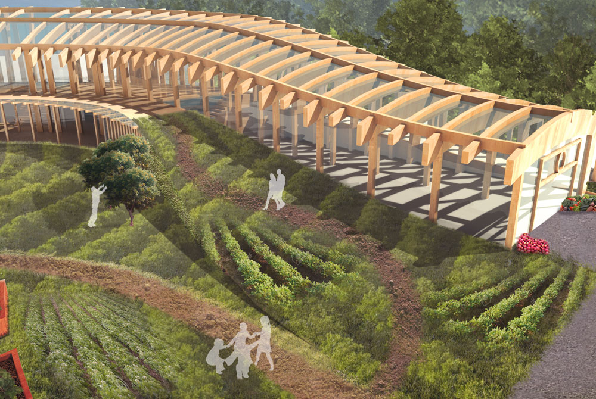
[-] Greenhouse Interior
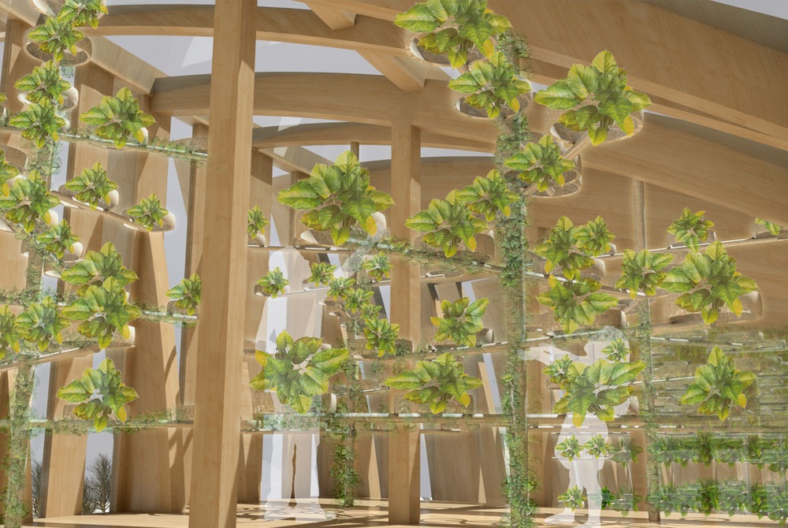
[-] Community Planters
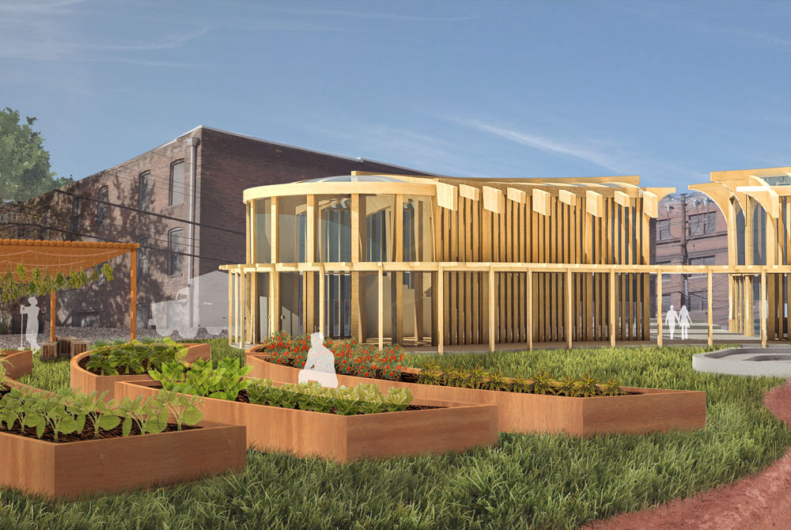
[-] Site Diagrams
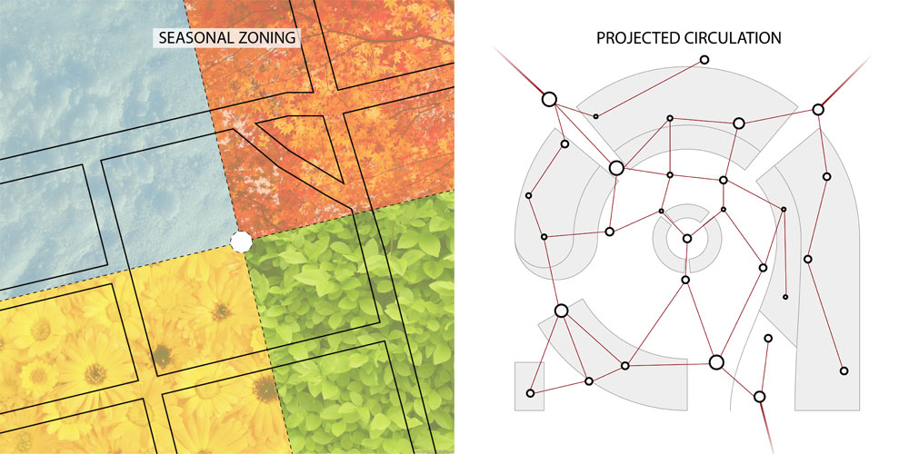
[-]Community Diagrams
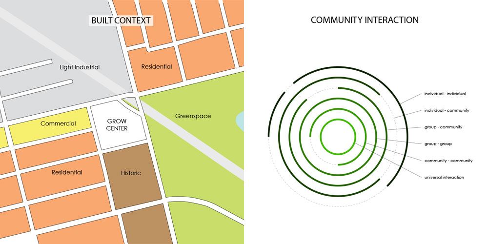
[-] Technical Diagrams
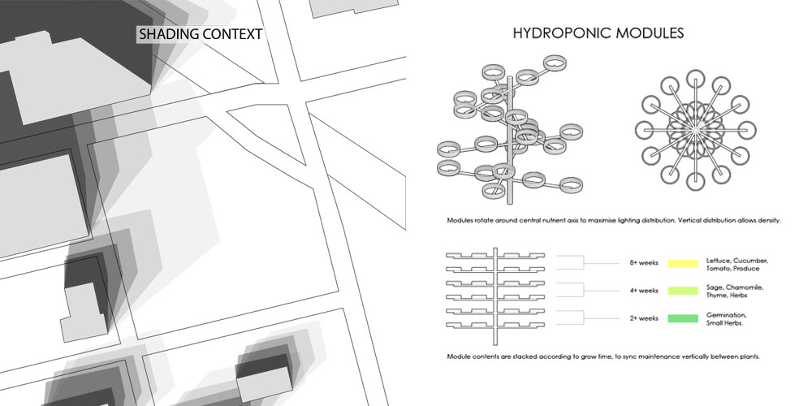
made with love and html. © Dan Cascaval 2017.